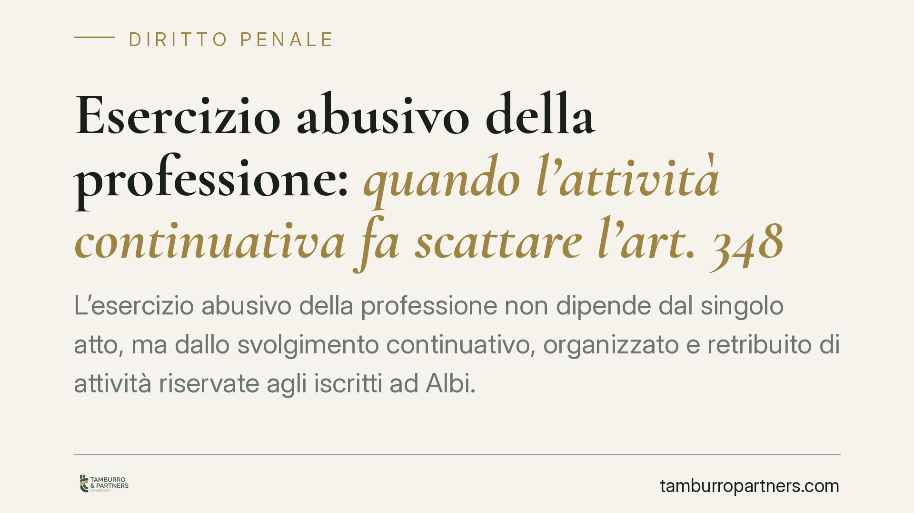

Esercizio abusivo della professione: quando l'attività continuativa fa scattare l'art. 348 c.p.
L'esercizio abusivo della professione non dipende dal singolo atto, ma dallo svolgimento continuativo, organizzato e retribuito di attività riservate agli iscritti ad Albi. La giurisprudenza distingue con precisione quali condotte rilevano. Il tema interessa società di servizi, committenti e professionisti, perché accanto alla sanzione penale si profila la nullità del contratto e la non azionabilità del compenso pattuito.

Il principio: continuità, organizzazione e retribuzione
L'art. 348 del codice penale punisce chi esercita una professione per la quale è richiesta una speciale abilitazione dello Stato, senza avervi titolo. La norma protegge un interesse pubblico: la garanzia che determinate attività, per i rischi che comportano, siano svolte solo da chi ha superato un controllo di competenza (esame di Stato, iscrizione all'Albo).
Il punto delicato è stabilire quando una condotta diventa reato. La giurisprudenza è concorde nel ritenere che non basta il compimento isolato di un atto. Il reato si configura quando l'attività riservata è svolta in modo continuativo, organizzato e dietro compenso, con apparenza di legittimo esercizio professionale verso i terzi.
Inquadramento normativo: atti tipici e atti caratteristici
Le Sezioni Unite della Cassazione (sentenza n. 11545/2012) hanno chiarito la distinzione operativa tra due categorie di atti.
Gli atti tipici (o esclusivi) sono quelli che la legge riserva in via assoluta agli iscritti all'Albo: il loro compimento da parte di un non abilitato integra il reato anche se isolato.
Gli atti caratteristici (o relativamente liberi) sono invece attività non riservate in modo esclusivo, che di per sé chiunque potrebbe compiere. Questi diventano penalmente rilevanti quando vengono svolti con continuità, organizzazione di mezzi e percezione di un compenso, in modo da apparire come esercizio professionale strutturato. È proprio su questa seconda categoria che si gioca la maggior parte delle contestazioni: la soglia non è il singolo gesto, ma il modello di attività.
Le ricadute contrattuali: nullità e inesigibilità del compenso
Il profilo penale si riflette sul piano civilistico, ed è qui che l'attenzione deve essere più alta.
Per le professioni protette l'art. 2231 del codice civile è la norma chiave: quando l'esercizio dell'attività è subordinato a iscrizione in un Albo e questa manca, la prestazione non dà azione per il pagamento della retribuzione. In altri termini, il presunto professionista non può pretendere il compenso in via giudiziale.
A ciò si aggiunge l'art. 1418 del codice civile, che sancisce la nullità del contratto contrario a norme imperative. Il contratto stipulato in violazione del divieto di esercizio abusivo può essere colpito da nullità per contrarietà a norma imperativa (lo stesso art. 348 c.p.).
Va precisato un limite. La non azionabilità del compenso opera pienamente per le attività effettivamente riservate. Dove l'attività sia solo parzialmente riservata, o si tratti di prestazioni libere, la valutazione va condotta caso per caso e non conduce automaticamente alla nullità. La distinzione tra atti tipici e atti caratteristici torna quindi rilevante anche in sede civile.
Implicazioni pratiche per i diversi destinatari
Società di servizi e strutture organizzate. Offrire al mercato, con continuità e organizzazione, prestazioni che rientrano in ambiti riservati espone al rischio penale e alla perdita del diritto al compenso. La forma societaria non è uno schermo: ciò che conta è la natura dell'attività effettivamente svolta.
Committenti e clienti. Chi affida un incarico a un soggetto non abilitato può trovarsi con un contratto nullo, con conseguenze sulla validità degli atti prodotti e sulla responsabilità per eventuali danni.
Professionisti iscritti ad Albi. Il tema interessa anche chi opera regolarmente: prestare il proprio nome o la propria iscrizione a copertura di attività svolte da terzi non abilitati può configurare concorso nel reato.
Cosa fare in concreto
- Mappare le attività effettivamente svolte e verificare quali rientrino in ambiti riservati per legge e quali siano liberamente esercitabili.
- Distinguere gli atti isolati dalle attività continuative: è l'organizzazione stabile e retribuita a spostare la condotta nell'area di rischio penale.
- Controllare la coerenza tra struttura societaria e prestazioni offerte, evitando che la società eroghi di fatto servizi riservati a iscritti ad Albi.
- Accertare sempre il titolo abilitativo del soggetto a cui si affida un incarico in ambiti regolati.
- È opportuna una verifica preventiva della validità dei contratti relativi a prestazioni che possono ricadere in attività protette, anche sotto il profilo dell'azionabilità del compenso.
---
*Contributo informativo a cura di Tamburro & Partners - Avv. Giuseppe Tamburro. Non costituisce parere legale.*
Ogni condominio ha una storia a sé.
Se gestisci un'amministrazione e vuoi un confronto su una specifica questione condominiale, scrivi allo studio. Ti rispondiamo entro un giorno lavorativo.